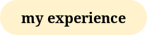
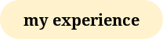
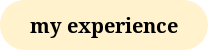
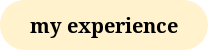

 

I am the first and only daughter and I have 3 brothers, and a dad whos embarrassing at times but he's the best nevertheless. Although, at times I really do wish I had a sister because I tend to get lonely as a girl. But at the end of the day, I'm truly grateful for all that I have. I get along with my brothers alright, my father is basically my best friend, and my mother is the toughest woman I know.
In this section, I will gladly tell about my family. Specifically about my Mum and Dad. Come read about the people who raised opportunities for me my whole life :)

My father is Wan Muzamil Bin Wan Ibrahim. He is an accountant at a company in Kuala Lumpur. He used to travel the world for work. The longest he was away from us was about 2 years and the furthest he went was in Riyadh, Saudi Arabia. He is one of my favourite person in the world, despite being annoying at times (as all children would feel towards their parent(s) at some point). He is funny, always wanting the best for his family, and i think he's super informative.
My mother is Aishah Binti Basir. She is in CIMB doing audit work. I'd say my mother is a strong woman. Emotionally and physically. She is driven as a person, and wouldn't even think of giving up, even when things get hopeless for her. She would wake up super early in the morning to prepare breakfast and leave for work even before the Sun is even up. She would be home on time by Maghrib to prepare for dinner. My mother is basically Superwoman, and I am proud to call her mine.
I have 3 brothers below me. Wan Haniff (18), Wan Taufiq (16) and Wan Naufal (11). They get on my nerves a lot of times, as they are annoying and they are just boys being boys. Being an only girl isn't that bad, but its also isn't that fun as well. Nevertheless, I am always gratful for them.